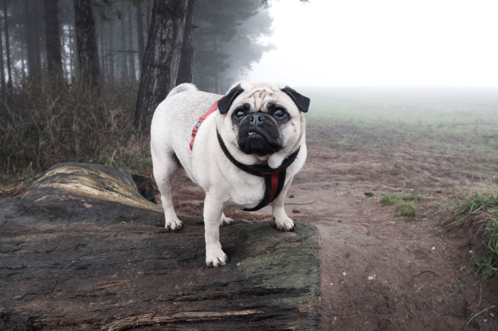
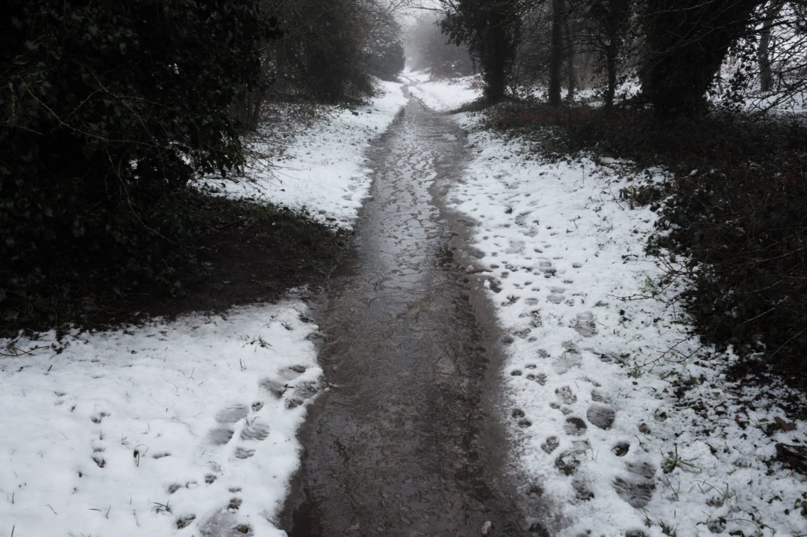
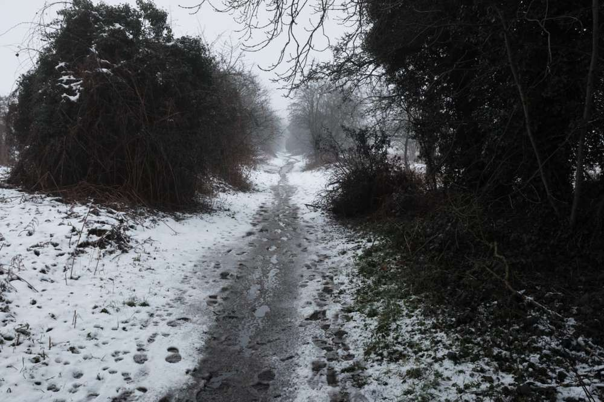
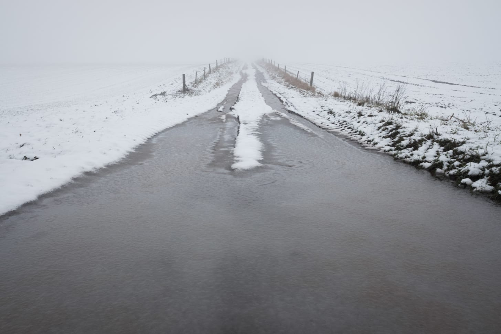
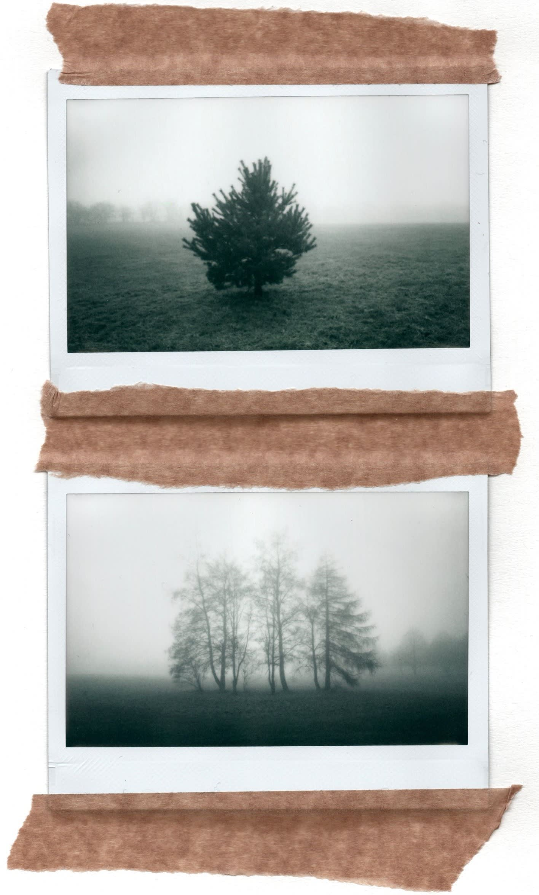
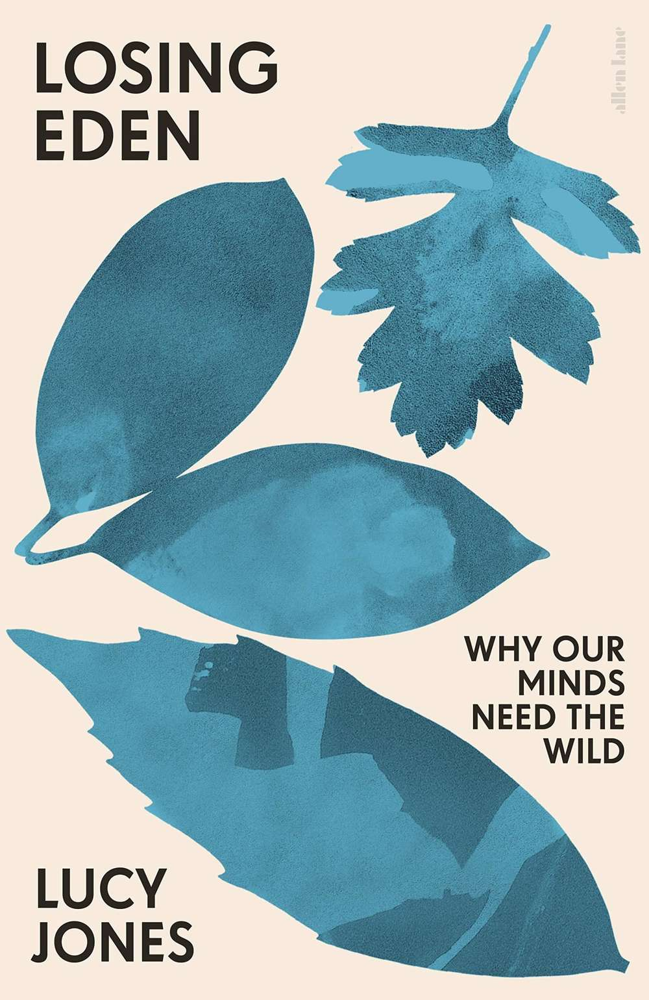

Rich's digital garden
A wet start to February
My dog, poppy, posing in the fog
{kind=link}
February began like spring with hardly a cloud in the sky. Living up to its older name solmonath (mud month), this was followed by snow and fog.
{kind=link}
{kind=link}
This weather has not been kind to the local paths we walk. Already waterlogged from January, recent snow furthered their sodden, sometimes stream-like, condition. One path, which I walk often and refer to as the lane, has transformed into a small stream. Long suspected, a spring gushes out from under a thick cluster of dead fern. The water is crisp and clear until it runs out on to the pathway’s sand becoming a murky brown, churning up pebbles and even fragments of brick.
I have not yet introduced the lane within this newsletter. Once a road following the parish boundary to a forgotten estate lodge, it is now a site of unmanaged nature and a fluid desire path running within. I have an affection for the lane with nature having reclaimed the space.
Besides the paths, the country back roads are not fairing any better. Standing in a deep black puddle of slush, I make this photo. These roads offer a focal point and leading lines within an already banal and featureless agrarian landscape.
{kind=link}
{kind=link}
While snow emphasizes banality, fog abbreviates spaces by separating subject from the background. Walking through the obscured golf course, the dog stays close-by a little unsure. We are shrouded, unable to see the usual walkers and their four-legged companions in the distance, only the silhouettes of nearby trees protrude. I make two photos with an Instax camera, while the dog plays in various waterlogged sand bunkers disappointed in the melting of the soft snow.
{kind=link}
Unfortunately for the sodden paths, we are currently expecting more snow. What I want, though, is more fog.
{kind=link}
Subscribe### Reading - Losing Eden
Contemporary literary work on the British landscape tends to be a focus on nature, wilderness, or wonder. Losing Eden, however, focuses on the wellbeing by arguing that we need connections to nature for our health and reflection. Backed by scientific research, it features a substantial scientific and academic bibliography in conjunction with accessible writing. I am interested in the benefits of being in nature, long suspecting urban wildscapes and edgelands are beneficial spaces for users. I know they are beneficial to me as covid escapism. However, I never considered that soil itself is beneficial throughmycobacterium vaccae bacterium, or that solastalgia may explain local attitudes to new housing development on green land. The text has an abundance of interesting and relevant information within.
{kind=link}
Bookmarks
- Interview with Jason Lee about his career.
- Kosuke Okahara‘s Blue Affair - I’ve followed Okahara after watching an nhk world documentary about his Fukushima fragments project (long since lost but replaced with a new nhk feature).
A plant-based developer - I enjoy these types of Instagram posts.
sally_gunnett A post shared by Sally Gunnett (@sally_gunnett)### Extra
A post shared by Sally Gunnett (@sally_gunnett)### Extra
Borrowed a trail camera to capture wildlife in the garden. Hopefully, I will find out why dead mice constantly appear under the tree here.
!video-to-gif output image(../imgs/c77fc1c7-bcbd-4ba9-b878-416e3f450f7f_480x270.gif)Starlings in my garden
{kind=link}
This article is from my newsletter. Consider subscribing, it's free and weekly.
Created
06/02/2021